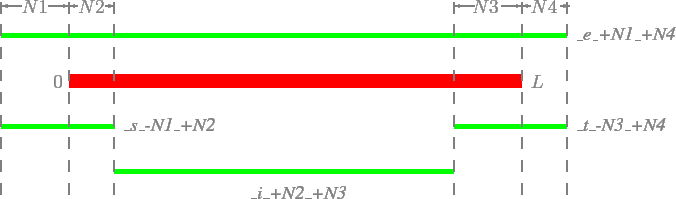

Extension parameters
There are four types of extended items which can be used to modify coordinates according to the pattern \_[iest]\_[+-]Number\_[+-]Number, as illustrated in Figure 11:
- _i_[+-]N1_[+-]N2: shorten [+-]N1 bp at 5' end, [+-]N2 bp at 3' end
- _e_[+-]N1_[+-]N2: extend [+-]N1 bp at 5' end, [+-]N2 bp at 3' end
- _s_[+-]N1_[+-]N2: get coordinates for sub-region from position N1 to N2 indexed from 5' end
- _t_[+-]N1_[+-]N2: get coordinates for sub-region from position N1 to N2 indexed from 3' end
Figure 11:
The four types of modification based on the original coordinates
|  |
Note that for repeat annotation, extension operations will only perform on the full length repeat in the genome. That means repeat items in the NCRNA_RMSK_EX option (see 3.1) if it is specified will only select untruncated repeats to do the modification and analyses. Repeats representing  of its consensus sequence are considered as full length/untruncated repeats.
of its consensus sequence are considered as full length/untruncated repeats.
Here, we show two examples of extension parameters use:
- Annotate reads in mature miRNAs.
- Due to the inaccurate processing of precursor miRNAs by Dicer or downstream miRNA remodelling, mature miRNAs often have end heterogeneities comparing to their annotations in miRBase. Thus, when analyzing mature miRNAs, it is necessary to extend miRNA annotation several bases (e.g. 2 bases) in both upstream and downstream region, which can be easily done in ncPRO-seq by using miRNA_e_+2_+2.
- Analyse tRNA-derived small RNAs (tsRNAs).
- It has been reported that tRNA can be processed again into different types of small RNAs probably through different mechanisms. To check read profiles of these small RNA families, you can specify the following options to TRNA_UCSC separated by comma: tRNA_e_+0_+50 (overview of all tsRNAs), tRNA_s_+0_+26 (tsRNAs at very 5' end), tRNA_s_+0_+40 (including tsRNAs from tRNA anti-codon stem cleavage) and tRNA_t_+0_+50 (tsRNAs from 3' tail of precursor tRNAs).
Jocelyn Brayet
2015-02-12